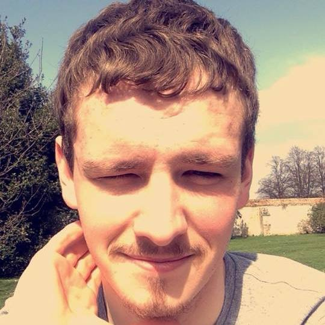

I'm a former student of Hinchingbrooke School where I went to both their secondary school and sixth form. For sixth form I was unsure of what to study so I chose subjects I was interested in at the time, settling on History, Sociology and Business studies.
After finishing sixth form I had little desire for higher education and decided that my time would be best spent working until I decided what i wanted to aim for in the future. I am still unsure what I want to aim for long term so I don't know what I want to do when I have finished this university course. Currently I am just focusing on my uni work and will likely have made a decision by the end of my studies.
My interests include, swimming, where I was part of a local team for 3 years, basketball, for 2 year and judo for 5 years. I also used to cycle regularly, to and from school and around a local lake.